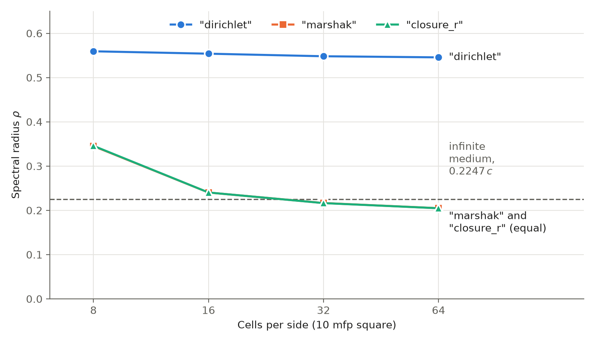
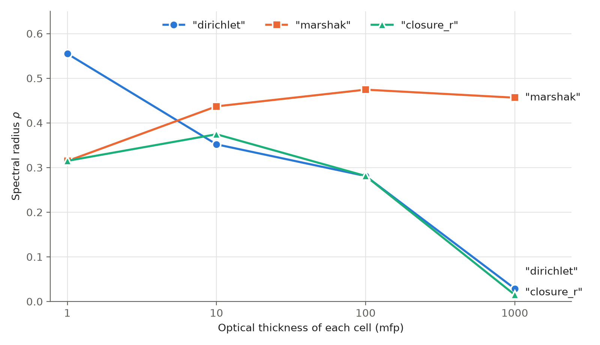

5.3.3. DSA Options on Regular Grids: Boundary Closure and Penalty Length
Within-group DSA (WGDSA) and two-grid DSA (TGDSA) correct each transport iteration with the solution of a diffusion problem for its error. OpenSn discretizes that diffusion problem with the modified interior penalty (MIP) method, and two groupset options control how:
Option |
Values |
Default |
|---|---|---|
|
|
|
|
|
|
The boundary closure is the condition that the correction satisfies on vacuum and incoming-flux boundaries. "marshak" imposes the natural Marshak condition; "dirichlet", OpenSn’s original treatment, imposes a zero correction through the interior-penalty boundary term; "closure_r" behaves like the Marshak condition on optically thin boundary cells and like a zero correction on thick ones. The penalty length \(h_\perp\) sets the interior penalty, proportional to \(D/h_\perp\),
that holds the discontinuous correction together across faces: "face_side" uses a length for each face, "cell", OpenSn’s original treatment, one length for the whole cell. The tgdsa_boundary_closure and tgdsa_h_perp_convention options make the same choices for TGDSA. The groupset section of the user guide defines each value precisely.
This tutorial measures how fast source iteration (SI) with WGDSA converges with each option, on one-group problems where the effect of each choice can be seen in isolation. The companion tutorial DSA on Distorted Meshes shows why the default penalty length is capped on badly shaped cells.
5.3.3.1. Measuring the convergence rate
SI with DSA is a fixed-point iteration \(\phi_{k+1} = T\phi_k + b\). Its error obeys \(e_{k+1} = T e_k\) and eventually decays by the spectral radius \(\rho\) of \(T\) in every iteration, so \(\rho\) is the number to compare: an iteration with \(\rho = 0.5\) gains one digit every 3.3 iterations, one with \(\rho = 0.22\) one digit every 1.5 iterations. The difference of two successive iterates obeys the same recursion as the error, so the ratio of the norms of successive differences tends to \(\rho\).
For SI with DSA in an infinite homogeneous medium, Fourier analysis with exact angular integration gives \(\rho = 0.2247\,c\), with \(c\) the scattering ratio. This is the reference value: a bounded domain, the boundary closure, the spatial discretization and the angular quadrature all move the measured value away from it.
The function below measures \(\rho\) for one problem. The groupset uses OpenSn’s Richardson iteration with a tolerance so loose that every call to Execute stops after one iteration, so a loop over Execute performs SI one iteration at a time; the scalar flux after each call comes from GetPhiNewLocal. The loop stops when the change is \(10^{-10}\) of the flux norm, above round-off, or after 80 iterations, and \(\rho\) is the geometric mean of the last five ratios (of all
but the first when the loop stops sooner: the first change is the first iterate itself, not a difference of iterates). The WGDSA diffusion solves use a tolerance of \(10^{-12}\), so the measured rate is that of the method, not of an inexact diffusion solve.
All problems have one group, isotropic scattering, vacuum boundaries, a smooth source without symmetry (so that every error mode is present), PWLD and a Gauss-Legendre-Chebyshev product quadrature with 4 polar and 8 azimuthal angles. The domain is the unit square or cube, so the total cross section \(\sigma_t\) is also its width in mean free paths (mfp). The mesh is split into four parts, so run the generated script with four MPI processes.
[ ]:
import math
import numpy as np
from mpi4py import MPI
from pyopensn.aquad import GLCProductQuadrature2DXY, GLCProductQuadrature3DXYZ
from pyopensn.context import Finalize
from pyopensn.math import VectorSpatialFunction
from pyopensn.mesh import KBAGraphPartitioner, OrthogonalMeshGenerator
from pyopensn.solver import DiscreteOrdinatesProblem, SteadyStateSourceSolver
from pyopensn.source import VolumetricSource
from pyopensn.xs import MultiGroupXS
comm = MPI.COMM_WORLD
rank = comm.rank
[ ]:
def make_box(cells_per_side, dim):
# Unit square (dim = 2) or cube (dim = 3) of orthogonal cells, in four KBA parts
nodes = [i / cells_per_side for i in range(cells_per_side + 1)]
mesh = OrthogonalMeshGenerator(
node_sets=[nodes] * dim,
partitioner=KBAGraphPartitioner(nx=2, ny=2, xcuts=[0.5], ycuts=[0.5]),
).Execute()
mesh.SetOrthogonalBoundaries()
mesh.SetUniformBlockID(0)
return mesh
def source_shape(point, num_groups):
# Smooth and without symmetry, so that every error mode is present
value = 1.0 + 0.5 * math.sin(7.3 * point.x + 1.1) * math.cos(5.9 * point.y + 0.4)
return [value * (1.0 + 0.3 * math.sin(4.7 * point.z + 0.2))] * num_groups
def spectral_radius(mesh, dim, sigma_t, c, closure="marshak", h_perp="face_side",
max_iterations=80):
xs = MultiGroupXS()
xs.CreateSimpleOneGroup(sigma_t, c)
if dim == 2:
quadrature = GLCProductQuadrature2DXY(n_polar=4, n_azimuthal=8, scattering_order=0)
else:
quadrature = GLCProductQuadrature3DXYZ(n_polar=4, n_azimuthal=8, scattering_order=0)
boundaries = ["xmin", "xmax", "ymin", "ymax", "zmin", "zmax"][: 2 * dim]
problem = DiscreteOrdinatesProblem(
mesh=mesh,
num_groups=1,
groupsets=[
{
"groups_from_to": (0, 0),
"angular_quadrature": quadrature,
"inner_linear_method": "classic_richardson",
# No iterate misses this tolerance: each Execute performs one iteration
"l_abs_tol": 1.0e10,
"l_max_its": 10,
"apply_wgdsa": True,
"wgdsa_l_abs_tol": 1.0e-12,
"wgdsa_l_max_its": 500,
"wgdsa_boundary_closure": closure,
"wgdsa_h_perp_convention": h_perp,
}
],
xs_map=[{"block_ids": [0], "xs": xs}],
volumetric_sources=[
VolumetricSource(block_ids=[0], func=VectorSpatialFunction(source_shape))
],
boundary_conditions=[{"name": name, "type": "vacuum"} for name in boundaries],
options={"verbose_inner_iterations": False},
)
solver = SteadyStateSourceSolver(problem=problem)
solver.Initialize()
changes = []
previous = np.array(problem.GetPhiNewLocal())
for _ in range(max_iterations):
solver.Execute()
current = np.array(problem.GetPhiNewLocal())
change = math.sqrt(comm.allreduce(float(np.sum((current - previous) ** 2))))
norm = math.sqrt(comm.allreduce(float(np.sum(current**2))))
changes.append(change)
previous = current
if change < 1.0e-10 * norm:
break
# The first change is the first iterate itself, not a difference of iterates
used = min(5, len(changes) - 2)
return (changes[-1] / changes[-1 - used]) ** (1.0 / used)
5.3.3.2. The boundary closure under mesh refinement
The first study refines the mesh of a 10 mfp square, from 8 to 64 cells per side, with each boundary closure and the default penalty length.
[ ]:
closures = ("dirichlet", "marshak", "closure_r")
refinement = {}
for cells_per_side in (8, 16, 32, 64):
mesh = make_box(cells_per_side, dim=2)
for closure in closures:
refinement[closure, cells_per_side] = spectral_radius(
mesh, 2, sigma_t=10.0, c=0.9999, closure=closure
)
if rank == 0:
for (closure, cells_per_side), rho in refinement.items():
print(f"Refinement {closure} {cells_per_side}x{cells_per_side} spectral radius={rho:.4f}")
assert refinement["marshak", 64] < refinement["dirichlet", 64]
Cells per side |
|
|
|
|---|---|---|---|
8 |
0.559 |
0.345 |
0.346 |
16 |
0.554 |
0.240 |
0.240 |
32 |
0.548 |
0.217 |
0.216 |
64 |
0.546 |
0.205 |
0.205 |

Spectral radius of SI with WGDSA in a 10 mfp square with vacuum boundaries, :math:`c = 0.9999`, against the number of cells per side. The dashed line is the infinite-medium value :math:`0.2247,c`.
With the Dirichlet closure the spectral radius stays near 0.55 however fine the mesh. The error of a transport iterate does not vanish on a vacuum boundary, so a correction forced to zero there leaves a boundary error mode that refinement does not remove. With the Marshak closure the spectral radius falls with refinement, to 0.205 on the finest mesh, slightly below the infinite-medium value because leakage through the boundary removes the slowest modes. On that mesh an iteration with the
Dirichlet closure needs 2.6 times as many iterations per digit (\(\ln 0.205 / \ln 0.546\)). The boundary cells are at most 1.25 mfp thick, so "closure_r" coincides with "marshak".
5.3.3.3. The scattering ratio
In an infinite medium the spectral radius of SI with DSA, \(0.2247\,c\), is proportional to the scattering ratio. The second study keeps the 32 by 32 mesh of the 10 mfp square and varies \(c\) to see how far this holds on a bounded domain.
[ ]:
mesh = make_box(32, dim=2)
scattering = {}
for c in (0.5, 0.9, 0.99, 0.9999):
for closure in ("dirichlet", "marshak"):
scattering[closure, c] = spectral_radius(mesh, 2, sigma_t=10.0, c=c, closure=closure)
if rank == 0:
for (closure, c), rho in scattering.items():
print(f"Scattering ratio {closure} c={c} spectral radius={rho:.4f} rho/c={rho / c:.4f}")
\(c\) |
|
|
|
|
|---|---|---|---|---|
0.5 |
0.188 |
0.377 |
0.091 |
0.183 |
0.9 |
0.417 |
0.464 |
0.194 |
0.216 |
0.99 |
0.527 |
0.532 |
0.216 |
0.218 |
0.9999 |
0.548 |
0.548 |
0.217 |
0.217 |
With the Marshak closure \(\rho/c\) stays between 0.18 and 0.22, close to the infinite-medium 0.2247: the spectral radius is nearly proportional to \(c\), so a measured spectral radius means little without the scattering ratio it was measured at. With the Dirichlet closure \(\rho/c\) grows from 0.38 to 0.55, because the boundary mode that limits it is not proportional to \(c\). Absorption speeds up every option, and \(c\) close to 1, as in these studies, is the hardest case.
5.3.3.4. Optically thick boundary cells
Coarse meshes of thick media have boundary cells many mean free paths thick. The third study keeps 8 cells per side and makes each cell 1 to 1000 mfp thick by raising \(\sigma_t\), for each boundary closure.
[ ]:
mesh = make_box(8, dim=2)
thick = {}
for cell_mfp in (1.0, 10.0, 100.0, 1000.0):
for closure in closures:
thick[closure, cell_mfp] = spectral_radius(
mesh, 2, sigma_t=8.0 * cell_mfp, c=0.9999, closure=closure
)
if rank == 0:
for (closure, cell_mfp), rho in thick.items():
print(f"Thick cells {closure} {cell_mfp:g} mfp spectral radius={rho:.4f}")
assert thick["closure_r", 1000.0] < thick["marshak", 1000.0]
Cell thickness (mfp) |
|
|
|
|---|---|---|---|
1 |
0.555 |
0.315 |
0.315 |
10 |
0.352 |
0.437 |
0.375 |
100 |
0.281 |
0.474 |
0.281 |
1000 |
0.029 |
0.456 |
0.015 |

Spectral radius of SI with WGDSA on an 8 by 8 mesh with vacuum boundaries, :math:`c = 0.9999`, against the optical thickness of each cell.
The two simple closures trade places as the cells thicken. On 1 mfp cells the Marshak closure is far better. From 10 mfp on, the Dirichlet closure is better, and it keeps improving with thickness while the Marshak closure stays near 0.46: across a boundary cell many mean free paths thick the transport error vanishes over most of the cell, which a zero correction matches and the Marshak condition does not. "closure_r" follows the better of the two. It equals "marshak" on 1 mfp cells and
"dirichlet" on 100 mfp cells, and at 10 mfp, where it blends the two forms, it lies between them. At 1000 mfp, "closure_r" and "dirichlet" both reach the stopping tolerance in six iterations, an order of magnitude faster than "marshak". Six iterations are too few for the estimate to settle (the ratios of successive changes are still growing when the loop stops), so the table does not rank these two.
5.3.3.5. The penalty length in three dimensions
On a cube of side \(a\) the "cell" length is \(V/S = a/6\) and the "face_side" length is the face length \(a\), with the same factor 2 on polyhedra, so the "cell" penalty is six times the "face_side" one (both stay above the penalty floor of 1/4 on every cell of this study). On quadrilaterals the two lengths are equal and "cell" omits the factor 2, so its penalty is half the "face_side" one, which on a regular 32 by 32 mesh changes the spectral radius by less
than 0.001 (see DSA on Distorted Meshes). On regular grids the penalty length therefore matters in three dimensions, where "cell" gives the larger penalty. The last study uses an 8 by 8 by 8 cube with the Marshak closure and cells 1 to 10 mfp thick.
[ ]:
mesh = make_box(8, dim=3)
penalty = {}
for cell_mfp in (1.0, 2.5, 5.0, 10.0):
for h_perp in ("cell", "face_side"):
penalty[h_perp, cell_mfp] = spectral_radius(
mesh, 3, sigma_t=8.0 * cell_mfp, c=0.9999, h_perp=h_perp
)
if rank == 0:
for (h_perp, cell_mfp), rho in penalty.items():
print(f"3D penalty length {h_perp} {cell_mfp:g} mfp spectral radius={rho:.4f}")
assert penalty["face_side", 5.0] < penalty["cell", 5.0]
Cell thickness (mfp) |
|
|
|---|---|---|
1 |
0.317 |
0.317 |
2.5 |
0.493 |
0.434 |
5 |
0.638 |
0.473 |
10 |
0.678 |
0.461 |
On 1 mfp cells the two lengths give the same spectral radius. On thicker cells the six times larger penalty of "cell" slows DSA: on 5 mfp cells an iteration with "cell" needs 1.7 times as many iterations per digit as one with "face_side" (\(\ln 0.473 / \ln 0.638\)).
5.3.3.6. Choosing the options
The defaults,
"marshak"and"face_side", converge fastest on resolved meshes, where the boundary cells are thin."closure_r"is the choice when boundary cells are many mean free paths thick, as on coarse meshes of thick media: it matches"marshak"on thin boundary cells and approaches a zero correction on thick ones."dirichlet"with"cell"reproduces OpenSn’s original WGDSA, for comparisons with earlier results.The
tgdsa_boundary_closureandtgdsa_h_perp_conventionoptions make the same choices for TGDSA, whose one-group diffusion problem has the same boundaries and cells.
These studies use SI so that the spectral radius can be measured directly. Krylov inner solvers ("petsc_gmres") need fewer iterations, but the options change their iteration counts in the same direction.
5.3.3.7. Finalize (for Jupyter Notebook only)
In script mode, PyOpenSn handles finalization automatically. In a Jupyter kernel, finalize OpenSn before MPI.
[ ]:
if "opensn_console" not in globals():
from IPython import get_ipython
if get_ipython() is not None:
Finalize()
MPI.Finalize()